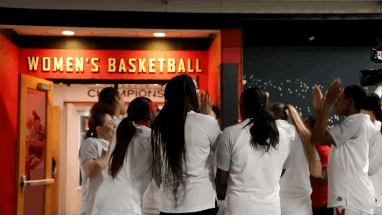

Kaila Charles’ senior season was cut short due to the NCAA cancelling their tournament in response to the novel coronavirus pandemic. However, finishing her career with 1,984 points, Charles has cemented her name in the University of Maryland Women’s Basketball history as the fifth all-time high scorer.
“In the beginning, it was just me scoring— playing hard. And I think when I got my thousand points, I was like, “Okay, I still got a year and a half, I can probably inch towards like the all-time record,” said Charles.
Charles passed 1,000 points the beginning of her junior year, though her sophomore year was her highest scoring season as a Terp, making up 31% of her career total.
“I remember at one point I wrote how many points it was [going to take] to get the all-time record. And… I wasn't like, “Oh, I just have to get it.” More just having a number there and erasing how many points I've gotten and seeing it go down and down gave me more motivation to be more aggressive and score and get me to where I am now,” said Charles.
During her time at Maryland, Charles has earned roughly 25 honors and awards.
Charles notes last year’s home game against Minnesota
as her most memorable game. “We were down seven with 55 seconds left, and I just kept on talking to my team, like, we're gonna win, we're gonna win. And in 50 seconds, we scored nine points. And on the last play, we were able to tie it. Shakira [Austin] was playing defense on the ball. She tipped it to me. I ran down the court in three seconds, I hit the game winner, and we won. That kind of solidified our regular season championship. And yeah, I remember just jumping around my teammates, hugging Bri [Fraser] because it was her senior year last year, and I essentially did that for her,” shared Charles.


Her teammates are not the only people Charles puts in the work for. While Charles said five has always been her favorite number, and she has a meaningful connection with the number.
“I'm kind of doing it for the five other people in my family—my mom, my dad and my three siblings. And so that's kind of where like, I really got attached to five and wanted to keep it going because like that kind of represents… who I'm actually playing for and trying to make it big and, you know, be successful for.”
Between all of the honors and awards, most recently the 2020 Big Ten Women’s Basketball Tournament Title, Charles said she has been “enjoying every single moment.”
“It took me the whole year to realize like, oh, shoot, this is my last year because I was just genuinely having fun every single day,” she said. “And when senior day came along, then I was like, oh, wow, wait, it's almost over. But it's been a great four years…cherishing every single time and opportunity I get to sit on the court with my second family.”

Charles is among three other seniors that had their final season this year.
After being picked to play for the Conneticut Sun in the 2020 WNBA draft, Charles is far from done with basketball, and her name will remain on the University of Maryland Women’s Basketball all-time high scorers list for years to come.